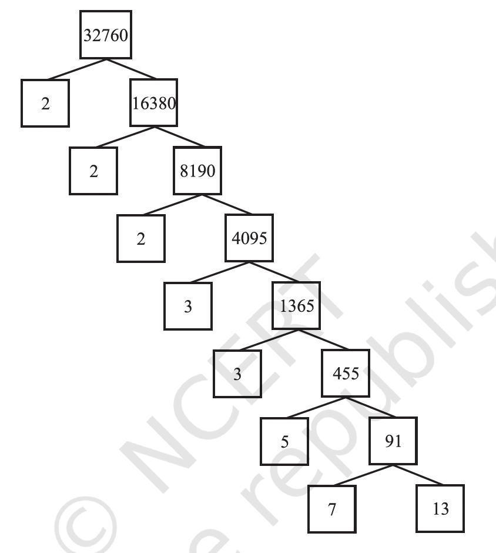

X#
Real Numbers#
Euclid’s Division Lemma#
Given positive integers \(a\) and \(b\), there exist unique integers \(q\) and \(r\) satisfying \(a = bq + r\), \(0 \leq r < b\).
Euclid’s division algorithm, as the name suggests, has to do with divisibility of integers. Stated simply, it says any positive integer \(a\) can be divided by another positive integer \(b\) in such a way that it leaves a remainder \(r\) that is smaller than \(b\).
Let us see how the algorithm works, through an example first. Suppose we need to find the HCF of the integers \(455\) and \(42\). We start with the larger integer, that is, \(455\). Then we use Euclid’s lemma to get
\(455 = 42 \times 10 + 35\)
Now consider the divisor \(42\) and the remainder \(35\), and apply the division lemma to get
\(42 = 35 \times 1 + 7\)
Now consider the divisor \(35\) and the remainder \(7\), and apply the division lemma to get
\(35 = 7 \times 5 + 0\)
Notice that the remainder has become zero, and we cannot proceed any further. We claim that the HCF of \(455\) and \(42\) is the divisor at this stage, i.e., \(7\).
Every positive even integer is of the form \(2q\), and every positive odd integer is of the form \(2q + 1\), where \(q\) is some integer.
The Fundamental Theorem of Arithmetic#
Every composite number can be expressed ( factorised) as a product of primes, and this factorisation is unique, apart from the order in which the prime factors occur.
Any natural number can be written as a product of its prime factors. For instance, \(2 = 2\), \(4 = 2 \times 2\), \(253 = 11 \times 23\)

Note
A composite number is a natural number (a positive whole number greater than 1) that has more than two factors (divisors) i.e. \(1\) and itself.
Note that \(\text{HCF}(6, 20) = 2^1 = \text{Product of the smallest power of each common}\) prime factor in the numbers.
\(\text{LCM}(6, 20) = 2^2 \times 3^1 \times 5^1 = \text{Product of the greatest power of each prime factor}\), involved in the numbers.
From the example above, you might have noticed that \(\text{HCF}(6, 20) \times \text{LCM}(6, 20) = 6 \times 20\).
In fact, we can verify that for any two positive integers \(a\) and \(b\), \(\text{HCF}(a, b) \times \text{LCM}(a, b) = a \times b\).
The key to understanding this lies in the prime factorization of the two numbers, \(a\) and \(b\).
Let’s say the prime factorization of \(a\) and \(b\) are as follows:
\(a = p_1^{a_1} \times p_2^{a_2} \times \dots \times p_n^{a_n}\) \(b = p_1^{b_1} \times p_2^{b_2} \times \dots \times p_n^{b_n}\)
where \(p_1, p_2, \dots, p_n\) are all the prime factors that appear in either \(a\) or \(b\) (or both), and \(a_i\) and \(b_i\) are non-negative integers representing the exponents of these prime factors in the factorization of \(a\) and \(b\), respectively. If a prime factor doesn’t appear in a number’s factorization, its exponent is 0.
Now, let’s think about how we find the HCF and LCM using these prime factorizations:
Highest Common Factor (HCF): The HCF is the product of the common prime factors raised to the lowest power they appear in either factorization. \(\text{HCF}(a, b) = p_1^{\min(a_1, b_1)} \times p_2^{\min(a_2, b_2)} \times \dots \times p_n^{\min(a_n, b_n)}\)
Least Common Multiple (LCM): The LCM is the product of all the prime factors that appear in either factorization raised to the highest power they appear in either factorization. \(\text{LCM}(a, b) = p_1^{\max(a_1, b_1)} \times p_2^{\max(a_2, b_2)} \times \dots \times p_n^{\max(a_n, b_n)}\)
Now, let’s consider the product of the HCF and the LCM:
\(\text{HCF}(a, b) \times \text{LCM}(a, b) = (p_1^{\min(a_1, b_1)} \times p_2^{\min(a_2, b_2)} \times \dots \times p_n^{\min(a_n, b_n)}) \times (p_1^{\max(a_1, b_1)} \times p_2^{\max(a_2, b_2)} \times \dots \times p_n^{\max(a_n, b_n)})\)
We can rearrange this product by grouping the powers of the same prime factors together:
\(\text{HCF}(a, b) \times \text{LCM}(a, b) = p_1^{\min(a_1, b_1) + \max(a_1, b_1)} \times p_2^{\min(a_2, b_2) + \max(a_2, b_2)} \times \dots \times p_n^{\min(a_n, b_n) + \max(a_n, b_n)}\)
Now, here’s the crucial insight: for any two numbers \(x\) and \(y\), the sum of their minimum and maximum is equal to their sum:
\(\min(x, y) + \max(x, y) = x + y\)
Applying this to the exponents of our prime factors:
\(\min(a_i, b_i) + \max(a_i, b_i) = a_i + b_i\)
So, our product becomes:
\(\text{HCF}(a, b) \times \text{LCM}(a, b) = p_1^{a_1 + b_1} \times p_2^{a_2 + b_2} \times \dots \times p_n^{a_n + b_n}\)
We can rewrite this using the properties of exponents:
\(\text{HCF}(a, b) \times \text{LCM}(a, b) = (p_1^{a_1} \times p_2^{a_2} \times \dots \times p_n^{a_n}) \times (p_1^{b_1} \times p_2^{b_2} \times \dots \times p_n^{b_n})\)
And recognizing the original prime factorizations of \(a\) and \(b\):
\(\text{HCF}(a, b) \times \text{LCM}(a, b) = a \times b\)
In simpler terms, the logic is this:
When you find the HCF, you take the common prime factors with their smallest exponents. When you find the LCM, you take all the prime factors with their largest exponents.
When you multiply the HCF and the LCM together, for each prime factor, you’re essentially combining the smallest and largest exponent from the original numbers. This combination reconstructs the original exponents of that prime factor in both \(a\) and \(b\) when multiplied together.
Let’s take our example of 6 and 20 again:
\(6 = 2^1 \times 3^1\) \(20 = 2^2 \times 5^1\)
HCF(6, 20) = \(2^{\min(1, 2)} \times 3^{\min(1, 0)} \times 5^{\min(0, 1)} = 2^1 \times 3^0 \times 5^0 = 2 \times 1 \times 1 = 2\) LCM(6, 20) = \(2^{\max(1, 2)} \times 3^{\max(1, 0)} \times 5^{\max(0, 1)} = 2^2 \times 3^1 \times 5^1 = 4 \times 3 \times 5 = 60\)
Now, let’s multiply the HCF and LCM:
HCF \(\times\) LCM = \(2 \times 60 = 120\)
And let’s multiply the original numbers:
\(6 \times 20 = 120\)
As you can see, they are equal!